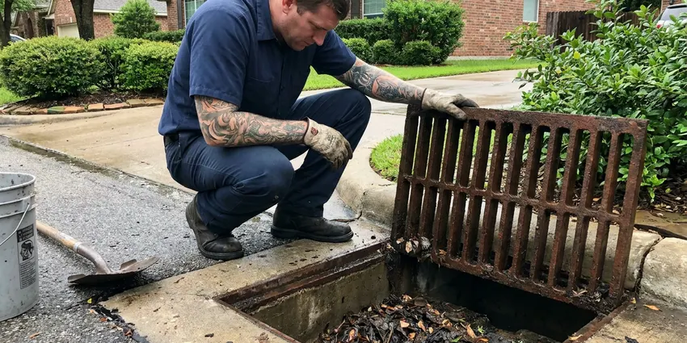

Backflow Preventer in Missouri City, TX
For reliable backflow preventer services in Missouri City, TX, trust DFJ Plumbing. We ensure your plumbing meets all local and state regulations.
- Fast, Certified Technicians
- Texas-Specific Expertise
- Code Compliant Work
- Transparent Pricing

Protect Your Water, Call Us Today in Missouri City, TX.
Our licensed plumbers are ready to help you maintain a safe water supply.
Expert Backflow Preventer Services in Missouri City, TX
DFJ Plumbing provides comprehensive backflow preventer services for homes and businesses across Missouri City, TX. These devices are crucial for preventing contaminated water from flowing back into your clean drinking water supply, a serious health hazard.
Our expertise includes:
- Licensed backflow preventer testing and certification.
- Repairs and replacements for all types and brands.
- New installations for residential and commercial properties.

Additional Plumbing Maintenance Services in Missouri City, TX
Our maintenance and specialty plumbing services in Missouri City, TX protect your home year-round and extend the life of every system.


Customers
Why Choose DFJ Plumbing for Backflow Preventer in Missouri City, TX?
Given Texas's varied water pressures and occasional municipal main breaks, a properly functioning backflow preventer is essential for peace of mind and safety.
- Health Safety, Prevent sewage, chemicals, and other pollutants from entering your potable water supply.
- Code Compliance, Ensure your property meets all local Missouri City and state plumbing codes for backflow prevention.
- Property Value, A well-maintained plumbing system, including backflow prevention, adds value and safety to your property.
Citywide Coverage
DFJ Plumbing proudly serves every neighborhood in Missouri City, providing prompt and professional backflow preventer services. Whether you are in the city center or the surrounding areas, our team is ready to respond to your needs.
Experienced Team
Our team of plumbers has extensive experience with all types of backflow preventer systems common in Texas. They undergo regular training to stay current on the latest devices, testing procedures, and local code updates specific to Missouri City.
Safety-First Approach
We follow rigorous safety protocols for every backflow prevention job, from initial testing to final installation. Our commitment to compliance guarantees that your water system is protected against contamination risks according to the highest standards.
Trusted Certified Missouri City Plumbing Services Professionals
At DFJ Plumbing, we take pride in providing certified plumbing services throughout Missouri City, TX. Backed by recognized industry credentials, our experienced plumbers combine technical skill with genuine customer care. Whether it is repair, installation, or maintenance, we follow strict safety and quality standards to deliver long-lasting results you can trust.
Call Us Now PHCC Plumbing Contractor Recognition
PHCC Plumbing Contractor Recognition Better Business Bureau (BBB) Accreditation
Better Business Bureau (BBB) Accreditation Angi Certified Pro
Angi Certified Pro ISO 9001 Quality Management Certification
ISO 9001 Quality Management CertificationReliable Backflow Preventer Services in Missouri City, TX
Backflow Preventer Testing in Missouri City
DFJ Plumbing provides certified backflow preventer testing required by many Texas municipalities. We use specialized equipment to check the device's functionality, ensuring it properly prevents reverse flow. Our technicians are licensed to perform these annual tests and submit all necessary reports to your local water authority, helping you avoid fines and maintain compliance. We test all common types, including RPZs, DCVAs, and PVBs, ensuring accurate readings and proper operation.

Backflow Preventer Repair in Missouri City, TX
If your backflow preventer fails its annual test or shows signs of malfunction, DFJ Plumbing offers expert repair services. Common issues include worn-out check valves, faulty relief valves, or damaged springs. Our team carries a wide range of replacement parts for leading brands like Watts, Wilkins, Febco, and Conbraco. We diagnose the exact problem and perform precise repairs to restore your device's full protective function, preventing potential water contamination in Missouri City.
New Backflow Preventer Installation in Missouri City
Whether you are installing a new irrigation system, fire suppression system, or need to replace an outdated device, DFJ Plumbing handles professional backflow preventer installations. We assess your property's specific needs and local plumbing codes to recommend the correct type and size of backflow preventer. Proper installation is critical for effective operation, and our certified plumbers ensure your new device is correctly fitted, tested, and compliant with all Missouri City standards.
Commercial Backflow Services in Missouri City, TX
Businesses in Missouri City often have more complex backflow prevention requirements due to higher water usage and diverse plumbing systems. DFJ Plumbing provides comprehensive commercial backflow services, including large-scale testing, repair, and installation for multi-unit properties, industrial facilities, and restaurants. We understand the specific demands of commercial operations and work efficiently to minimize disruption, keeping your business compliant and your water supply safe.
Residential Backflow Solutions in Missouri City
For homeowners in Missouri City, a backflow preventer is essential for protecting against contaminants from garden hoses, irrigation systems, or even cross-connections within your home's plumbing. DFJ Plumbing offers tailored residential backflow solutions, from installing atmospheric vacuum breakers (AVBs) for hose bibs to more robust devices for entire home protection. We ensure your family's drinking water remains pure and your home meets all local water safety regulations.
Watts Backflow Preventer Service in Missouri City, TX
Watts is a leading manufacturer of backflow prevention devices, known for their reliability and wide range of products. DFJ Plumbing specializes in servicing Watts backflow preventers, including their popular 009 series and 909 series reduced pressure zone assemblies. Our technicians are experienced in diagnosing and repairing specific Watts components, ensuring that your device performs optimally. We also stock genuine Watts parts for quick and effective repairs, keeping your system in top condition.
Febco Backflow Preventer Experts in Missouri City
Febco backflow preventers are commonly found in commercial and irrigation applications across Texas. DFJ Plumbing provides expert service for all Febco models, including their 825Y and 860 series. We understand the nuances of Febco designs and can efficiently troubleshoot, repair, or replace components like check valves, relief valves, and air inlets. Trust us to maintain your Febco device to factory specifications, guaranteeing its effectiveness against backflow events.

Emergency Backflow Repair in Missouri City, TX
A failed backflow preventer can pose an immediate threat to your water quality. If you suspect a serious issue or receive a notice from the water department, DFJ Plumbing offers emergency backflow repair services in Missouri City, TX. We prioritize these critical situations to quickly diagnose and fix the problem, restoring the integrity of your water system. Our rapid response team is equipped to handle urgent repairs and ensure your water supply is protected without delay.
Backflow Preventer Near Me in Missouri City, TX
When you search for 'backflow preventer near me' in Missouri City, TX, DFJ Plumbing is your local, trusted choice. We are deeply familiar with Missouri City's plumbing infrastructure and the specific challenges Texas water systems face. Our proximity means faster response times and technicians who understand local codes and environmental factors.
Choosing a local company like DFJ Plumbing for your backflow preventer needs ensures personalized service and a commitment to our community in Missouri City. We pride ourselves on being accessible and responsive to all our customers, providing peace of mind that your water supply is safe.
DFJ Plumbing at a Glance
- Licensed and insured plumbers serving Missouri City, TX
- Same-day appointments and 24/7 emergency response
- Clear written estimates, no hidden fees
- 4.9-star rated by 812+ Texas customers
Missouri City Map
Missouri City Information
- Population
- 76,773
- Area codes
- 281/346/832
- Service area
- Missouri City and communities within 40 miles
- Nearby
- Sugar Land, Pearland, Houston, Pasadena
Given Texas's expansive irrigation systems and fluctuating water demands, a properly functioning backflow preventer is vital for protecting Missouri City, TX homes from potential water contamination.
Expert Services
Trust our professionals for reliable DFJ Plumbing solutions in Missouri City, TX.
Our Specialized Plumbing Services in Missouri City, TX
At DFJ Plumbing, we provide a complete range of plumbing services across Missouri City, TX. From leak detection to full system installations, our team ensures fast, precise, and affordable service for both residential and commercial properties. Explore our core services below:


How Our Backflow Preventer Process Works in Missouri City, TX
At DFJ Plumbing, we make backflow preventer service straightforward and efficient. Here is what you can expect when you choose us.
Request a Quote
Call (737) 405-5978 or fill out our online form to schedule your backflow preventer service. Our friendly team will gather initial details and set up an appointment.
On-Site Assessment
A certified technician arrives at your Missouri City property to assess your backflow preventer. They will perform necessary tests or evaluate the existing system for repair or replacement.
Expert Service
We perform the required service, whether it is a precise repair, certified testing, or a new installation. All work adheres to Texas plumbing codes and manufacturer specifications.
Frequently Asked Questions About Backflow Preventer in Missouri City
The cost for backflow preventer services in Missouri City, TX varies. A standard backflow test typically ranges from $75 to $150. Repairs can cost between $200 and $600, depending on the parts needed, while new installations might range from $450 to $1,500 or more for larger commercial units. We provide a clear quote before starting any work.
Backflow prevention is crucial in Texas due to varying water pressures, occasional drought conditions leading to low water pressure, and the potential for cross-connections from irrigation systems or industrial processes. These factors increase the risk of contaminated water entering the public supply, making a functional backflow preventer essential.
If your backflow preventer fails its annual test, you will typically receive a notice from the Missouri City water department requiring immediate repair or replacement. Our technicians can diagnose the failure, perform the necessary repairs, and retest the device to ensure it passes inspection and avoids any service interruptions or penalties.
Yes, new backflow preventer installations or significant replacements often require a plumbing permit from the Missouri City building department. This ensures the installation meets local codes and is inspected for proper function. DFJ Plumbing can help you navigate the permitting process.
DFJ Plumbing stands behind our work with a comprehensive warranty on parts and labor for all backflow preventer services. The specific warranty period will be outlined in your service agreement, but generally, new installations come with a manufacturer's warranty on the device and our warranty on the installation.
Signs of a failing backflow preventer include discolored water, unusual tastes or odors in your water, water leaking from the relief valve, or a sudden drop in water pressure. If you notice any of these issues, it is important to have your device inspected promptly.
DFJ Plumbing services all major types of backflow preventers, including Reduced Pressure Zone Assemblies (RPZs), Double Check Valve Assemblies (DCVAs), Pressure Vacuum Breakers (PVBs), and Atmospheric Vacuum Breakers (AVBs). We work with popular brands like Watts, Wilkins, Febco, and Conbraco.
No, backflow preventer testing and repair must be performed by a licensed and certified backflow prevention assembly tester. This is a strict requirement by Texas state law and local Missouri City ordinances to ensure public health and safety. Improper handling can lead to serious water contamination.
What People Are Saying About Our Plumbing Experts?

Daniel K.
A pipe burst at 11 pm and they actually answered. The plumber showed up within the hour, shut everything down, and had us back to normal the next morning. Could not ask for more.
Emergency Plumbing · Pasadena, TX
James P.
Our commercial plumbing system had a leak under the sink, and DFJ Plumbing handled it professionally. The plumbers arrived quickly and restored everything without disruption to our customers.
Commercial Plumbing · League City, TX
Mark T.
When our office needed drain cleaning, DFJ Plumbing provided quick, reliable service. The plumber arrived on time and made sure every drain flowed perfectly before leaving. Very satisfied.
Drain Cleaning · Pasadena, TX
Emily R.
I called DFJ Plumbing for plumbing repair, and the technician was fast, polite, and thorough. They explained the problem clearly and fixed it the same day. I will definitely hire them again. Highly recommended!
Plumbing Repair · Sugar Land, TXRobert G.
The trenchless sewer replacement saved our front yard. They walked us through the camera inspection footage first so we knew exactly what we were paying for.
Sewer Line Replacement · Houston, TX
Sofia M.
Two new toilets installed in one visit, no mess left behind, and the tech even adjusted a faucet he noticed was dripping. Fair pricing and really friendly.
Toilet Installation · Sugar Land, TX